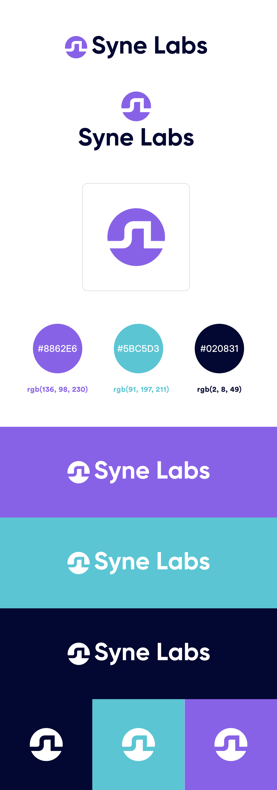
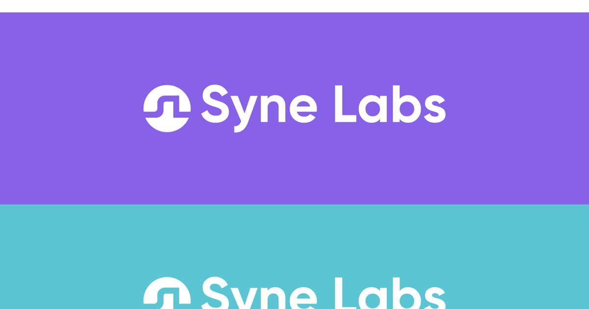

SyneLabs
Brand identity for an IoT, custom circuit board, and smart-home company
DESCRIPTION
SyneLabs was a 2022 branding engagement for an IoT-specific company founded by Sri Lankan fellows based in the UK. The business worked across custom circuit board design and printing, smart-home concepts, and connected IoT solutions.
CONTEXT
The brand needed to feel technical enough for hardware and embedded systems, but approachable enough for home automation and connected-device customers. I worked with SyneLabs as their branding and initial marketing partner, designing the logo system and the first brand materials they could use in outreach.
The identity direction used a compact symbol, a high-trust navy, and energetic purple and cyan accents to connect lab work, signal flow, and IoT connectivity in one small system.
Full Case Study
A hardware-facing brand built to make IoT engineering, circuit-board work, and smart-home solutions feel connected under one identity.
The Challenge
SyneLabs needed one identity to cover multiple technical services: custom circuit-board design and printing, smart-home solutions, and broader IoT implementation work. That meant the brand had to speak to engineering credibility without becoming cold or difficult to understand.
The early marketing layer also mattered. The company needed a logo and collateral system that could work in proposals, letterheads, social touchpoints, and business conversations before a larger marketing system existed.
Brand Direction
I treated SyneLabs as a connected-systems brand rather than a generic software startup. The visual language needed to suggest signals, sync, hardware traces, and lab precision while staying simple enough for small marks and printed materials.
The final direction used a circular symbol with a continuous line form inside it. It gives the mark a signal-path feeling, while the round container keeps it stable and recognizable next to the wordmark.

Signal, lab, and hardware logic in one mark.
The symbol was designed to hold up on digital and printed surfaces, from social avatars and proposal covers to internal documents and hardware-related collateral.
Color System
The palette kept the company in a technical space without falling into a default blue-only technology look. Purple gave the identity a distinctive startup energy, cyan connected to smart systems and signal flow, and navy gave the system enough seriousness for engineering and client communication.
Delivered Brand Board
The brand PDF documented the logo lockups, standalone symbol, color palette, and light/dark usage directions. It gave the team a practical reference point for using the identity consistently across early business materials.

Delivered brand board: logo lockups, symbol usage, palette, and color-background applications.
Business Stationery
The letterhead extended the brand into a more formal business context. The top and bottom color bars carried the identity system without taking attention away from the document body, while the contact footer made the piece usable for proposals, letters, and client communication.

Letterhead design for early business communication and proposal material.

Color application showing the mark and wordmark across the core palette.
Delivery
The project was delivered as an initial brand identity package: logo direction, SVG symbol, color palette, letterhead, and a concise PDF guide. The system gave SyneLabs a credible foundation for early marketing, client communication, and hardware-focused positioning.
The useful part of this work was giving a young IoT company a brand that could move between technical credibility and smart-home accessibility without needing separate identities for each service area.
This was an early-stage branding partnership for a company operating across embedded systems, custom boards, and connected-device solutions.
SyneLabs branding, designed and delivered in 2022.